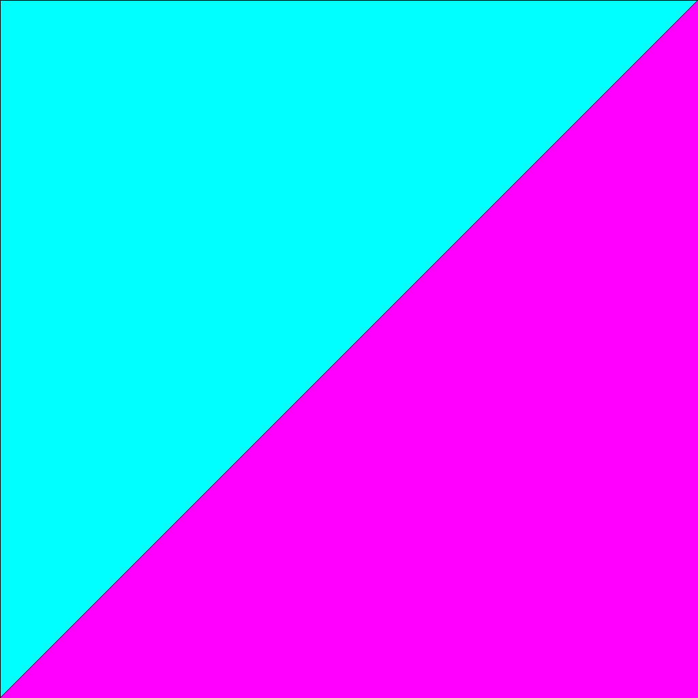
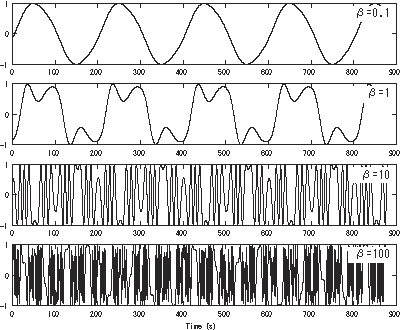

class: titleslide # VIDEOSYNTH<br>AURALIZER Synthesizing video<br>& turning it into music! on the GPU!<br> in the browser!<br> using WebGL 3D!<br> and the Web Audio API! --- class: nameslide Hi. I'm <div class="name"><span class="nametop"><span class="jesse"><span class="jes">J E S</span> S E</span> A L E X A N D E R</span> <span style="color:magenta">E</span> <span style="color:orange">U</span> <span style="color:brown">N</span> <span style="color:#39FF14">O</span> <span style="color:#7373FF">I</span> <span style="color:#D400FF">A</span> <span style="color:#FF5EAA">C O N F U S E D</span> S U N D I A L A P O C A L Y P S O <span class="haze">H A Z E</span> <span class="janvir">J A N V I R</span> F R E T Z – <span style="color:blue">H</span> <span style="visibility:hidden">x</span> <span style="color:yellow">U</span> <span style="visibility:hidden">x</span> <span style="color:red">E</span><br><span class="wolfe">W O L F E ! </span><span class="roman"># 5 1 9 9</span></name></div> <div class="handle"><span class="handledark"><svg aria-hidden="true" class="octicon octicon-mark-github" height="32" version="1.1" viewBox="0 0 16 16" width="32"><path fill-rule="evenodd" d="M8 0C3.58 0 0 3.58 0 8c0 3.54 2.29 6.53 5.47 7.59.4.07.55-.17.55-.38 0-.19-.01-.82-.01-1.49-2.01.37-2.53-.49-2.69-.94-.09-.23-.48-.94-.82-1.13-.28-.15-.68-.52-.01-.53.63-.01 1.08.58 1.23.82.72 1.21 1.87.87 2.33.66.07-.52.28-.87.51-1.07-1.78-.2-3.64-.89-3.64-3.95 0-.87.31-1.59.82-2.15-.08-.2-.36-1.02.08-2.12 0 0 .67-.21 2.2.82.64-.18 1.32-.27 2-.27.68 0 1.36.09 2 .27 1.53-1.04 2.2-.82 2.2-.82.44 1.1.16 1.92.08 2.12.51.56.82 1.27.82 2.15 0 3.07-1.87 3.75-3.65 3.95.29.25.54.73.54 1.48 0 1.07-.01 1.93-.01 2.2 0 .21.15.46.55.38A8.013 8.013 0 0 0 16 8c0-4.42-3.58-8-8-8z"></path></svg>jes5199</span></div> --- class: artslide <br> <br> <br> <br> <br> <br> <br> I make algorithmic art. --- class: projectintroslide <div class="introwindow"></div> --- class: webglslide # WebGL exists and is weird but good --- class: cubeglslide whiteshadow #### vertex shader + fragment shader = GL program <br> <span style="font-size:30pt">+</span> <br> <br> <br> <span style="font-size:30pt">=</span> <img src="images/cube.png" style="width:200px"> --- class: shadertoyslide whiteshadow to make 2D graphics <div style="text-align:center"> <br> degenerate vertex shader </div> --- class: shadertoyslide whiteshadow to make 2D graphics <div style="text-align:center"> <br> degenerate vertex shader<br> ↓<br> fragment shaders can do anything: </div> --- class: webaudioslide Web Audio exists and can do lots of stuff I don't understand <div style="display:flex; flex-wrap:wrap; justify-content: space-around; align-items: center"> <div> </div> <div> <img src="images/webaudio2.png"> </div> <div> </div> <div> </div> <div> </div> <div> </div> </div> --- class: jsa440slide --- class: jsa440slide iframe_id: jsa440frame iframe_src: frames/js-a440.html <iframe id="jsa440frame" style="display:none;border: 0"></iframe> --- class: jstriadslide --- class: jstriadslide iframe_id: jstriadframe iframe_src: frames/js-triad.html <iframe id="jstriadframe" style="display:none;border: 0"></iframe> --- class: typesignatureslide whiteshadow #### audio ``` t → n ``` <span class="cdquality">44,100 samples per second<br>(for CD quality)</span> --- class: typesignatureslide whiteshadow #### "frame" of audio ``` t → [n, n, n, n, n, n, n, n, n, n...] ``` <span class="kilo" style="font-size:20pt">1024 samples per frame</span> <span style="font-size:17pt"><span class="cdquality">44,100</span> ÷ <span class="kilo">1024</span> = <span style="color:gold">43.06640625 frames per second</span></span> --- class: typesignaturevideoslide whiteshadow #### frames of video <pre class="remark-code">t <span style="position:absolute">→</span><span style="visibility:hidden">-></span> [[(<span style="color:red">r</span>,<span style="color:green">g</span>,<span style="color:blue">b</span>), (<span style="color:red">r</span>,<span style="color:green">g</span>,<span style="color:blue">b</span>), (<span style="color:red">r</span>,<span style="color:green">g</span>,<span style="color:blue">b</span>), (<span style="color:red">r</span>,<span style="color:green">g</span>,<span style="color:blue">b</span>), ...], [(<span style="color:red">r</span>,<span style="color:green">g</span>,<span style="color:blue">b</span>), (<span style="color:red">r</span>,<span style="color:green">g</span>,<span style="color:blue">b</span>), (<span style="color:red">r</span>,<span style="color:green">g</span>,<span style="color:blue">b</span>), (<span style="color:red">r</span>,<span style="color:green">g</span>,<span style="color:blue">b</span>), ...], [(<span style="color:red">r</span>,<span style="color:green">g</span>,<span style="color:blue">b</span>), (<span style="color:red">r</span>,<span style="color:green">g</span>,<span style="color:blue">b</span>), (<span style="color:red">r</span>,<span style="color:green">g</span>,<span style="color:blue">b</span>), (<span style="color:red">r</span>,<span style="color:green">g</span>,<span style="color:blue">b</span>), ...], ... [(<span style="color:red">r</span>,<span style="color:green">g</span>,<span style="color:blue">b</span>), (<span style="color:red">r</span>,<span style="color:green">g</span>,<span style="color:blue">b</span>), (<span style="color:red">r</span>,<span style="color:green">g</span>,<span style="color:blue">b</span>), (<span style="color:red">r</span>,<span style="color:green">g</span>,<span style="color:blue">b</span>), ...]] </pre><span style="color:yellow">anywhere from 24 to 60 frames per second</span> #### frames of audio ``` t → [n, n, n, n, n, n, n, n, n, n, n, n, ....] ``` <span style="color:gold">about 43 frames per second</span> --- class: typesignaturevideoslide whiteshadow #### frames of video (in black and white) <pre class="remark-code">t <span style="position:absolute">→</span><span style="visibility:hidden">-></span> [[n, n, n, n, n, n, n, n, n, n, n, n, ....], [n, n, n, n, n, n, n, n, n, n, n, n, ....], [n, n, n, n, n, n, n, n, n, n, n, n, ....], ... [n, n, n, n, n, n, n, n, n, n, n, n, ....]], </pre> #### frames of audio ``` t → [n, n, n, n, n, n, n, n, n, n, n, n, ....] ``` <div style="display:flex; justify-content: space-around; flex-wrap: wrap; width:100%; font-size:20pt; font-weight:bold"> <span style="color:#EE20E0"> <br>Each row of pixels<br>in a frame of video<br>can be understood<br>as a frame of audio </span> <span style="color:#20E0EE"> <br>The columns<br>can be summed<br>to play the rows<br>simultaniously </span> </div> --- class: audializerjsslide --- class: a440slide --- class: a440gl whiteshadow iframe_id: glframe iframe_src: frames/webgl-a440.html <span style="color:#6DFC6C">A 440</span> --- class: whiteshadow <span style="color:powderblue">okay why was that moving?</span> --- class: resonantgl iframe_id: glframe iframe_src: frames/webgl-resonant.html <span style="color:gold">43.06640625 Hz</span> --- class: resonantgl whiteshadow iframe_id: glframe iframe_src: frames/webgl-resonant-higher.html <span style="color:gold">F<span style="font-weight:normal;font-family:Musica Regular;font-size:34pt;margin-top:-100px;display:inline-block">𝄯</span> 172.265625 Hz</span> --- class: resonantgl whiteshadow iframe_id: glframe iframe_src: frames/webgl-resonant-triad.html <span style="color:gold">F<span style="font-weight:normal;font-family:Musica Regular;font-size:34pt;margin-top:-100px;display:inline-block">𝄯</span></style> Major</span> --- class: whiteshadow #### <span class="whiteshadow">frequencies for major scale, pythagorean tuning</whiteshadow> <pre class="remark-code"><span style="color:gold">resonance</span> = (<span class="cdquality">44100</span> / <span class="kilo">1024</span>); // <span style="color:gold">43.06640625 hz</span> <span style="color:red">tonic</span> = <span style="color:gold">resonance</span> * 2**3; // 3 octaves up notes = [ 0, <span style="font-size:20pt;color:red">tonic * 1</span>, <span style="font-size:20pt;color:orange">tonic * 9/8</span>, <span style="font-size:20pt;color:yellow">tonic * 81/64</span>, <span style="font-size:20pt;color:green">tonic * 4/3</span>, <span style="font-size:20pt;color:blue">tonic * 3/2</span>, <span style="font-size:20pt;color:indigo">tonic * 27/16</span>, <span style="font-size:20pt;color:violet">tonic * 243/128</span>, <span style="font-size:20pt;color:red">tonic * 2</span> ] </pre> --- class: resonantgl whiteshadow # <span style="color:gold">43.06640625 hz</span> --- class: resonantgoogle whiteshadow # <span style="color:gold">43.06640625 hz</span> --- class: adventurekid --- class: whiteshadow single cycle waveforms (Adventure Kid's piano sounds) <div style="display:flex; justify-content: space-around; flex-wrap: wrap; width:100%;"> <img src="images/AKWF_piano_0015.wav.blob.png" style="width:300px;height:126.5px;margin:20px 0px;"> </div> --- class: whiteshadow iframe_id: glframe iframe_src: frames/pianos.html single cycle waveforms (Adventure Kid's piano sounds) --- class: whiteshadow Iris's sound --- class: longgurgle whiteshadow Iris's sound --- class: whiteshadow ### irisgurgle.blob.png --- class: whiteshadow iframe_id: glframe iframe_src: frames/iris.html Iris's sound --- class: whiteshadow <span style="color:Turquoise">(then I got excited)</span> --- class: whiteshadow <span style="color:deeppink">aah</span> --- class: whiteshadow <span style="color:deeppink">aah</span> <span style="color:lime">eee</span> --- class: whiteshadow <span style="color:deeppink">aah</span> <span style="color:lime">eee</span> <span style="color:aqua">ohh</span> --- class: whiteshadow iframe_id: glframe iframe_src: frames/vocals.html <span style="color:deeppink">aah</span>, <span style="color:lime">eee</span>, <span style="color:aqua">ohh</span> --- class: whiteshadow <span style="color:#FF8000">at this point i should just put a song on</span> <br><span style="color:#00F0FF">(but i'll keep talking)</span> --- class: redtree whiteshadow centered iframe_id: redtreeframe iframe_src: frames/blue skies and red trees.html #### <span style="color:gold">"blue skys and red trees"</span> --- class: redtree whiteshadow iframe_id: redtreeframe iframe_src: frames/blue skies and red trees.html #### multiple loops of different lengths <pre class="remark-code">parts = [ [<span style="color:lightblue">1</span>, <span style="color:orange">7</span>, <span style="color:magenta">6</span>, <span style="color:green">2</span>, <span style="color:cyan">3</span>, <span style="color:lightblue">1</span>, <span style="color:lightblue">1</span>], [<span style="color:lightblue">1</span>, <span style="color:orange">7</span>, <span style="color:magenta">6</span>, <span style="color:green">2</span>, <span style="color:cyan">3</span>, <span style="color:lightblue">1</span>, <span style="color:lightblue">1</span>, <span style="color:lightblue">1</span>, <span style="color:lightblue">1</span>], [<span style="color:lightblue">1</span>, <span style="color:orange">7</span>, <span style="color:magenta">6</span>, <span style="color:green">2</span>, <span style="color:cyan">3</span>, <span style="color:lightblue">1</span>, <span style="color:lightblue">1</span>, <span style="color:lightblue">1</span>, <span style="color:lightblue">1</span>, <span style="color:lightblue">1</span>, <span style="color:lightblue">1</span>], [<span style="color:lightblue">1</span>, <span style="color:orange">7</span>, <span style="color:magenta">6</span>, <span style="color:green">2</span>, <span style="color:cyan">3</span>, <span style="color:lightblue">1</span>, <span style="color:lightblue">1</span>, <span style="color:lightblue">1</span>, <span style="color:lightblue">1</span>, <span style="color:lightblue">1</span>, <span style="color:lightblue">1</span>, <span style="color:lightblue">1</span>, <span style="color:lightblue">1</span>], [<span style="color:lightblue">1</span>, <span style="color:orange">7</span>, <span style="color:magenta">6</span>, <span style="color:green">2</span>, <span style="color:cyan">3</span>, <span style="color:lightblue">1</span>, <span style="color:lightblue">1</span>, <span style="color:lightblue">1</span>, <span style="color:lightblue">1</span>, <span style="color:lightblue">1</span>, <span style="color:lightblue">1</span>, <span style="color:lightblue">1</span>, <span style="color:lightblue">1</span>, <span style="color:lightblue">1</span>, <span style="color:lightblue">1</span>], ] </pre> --- class: redtree iframe_id: redtreeframe iframe_src: frames/blue skies and red trees.html <div style="text-align:center"></div> --- class: incframe iframe_id: redtreeframe iframe_src: frames/blue skies and red trees.html <div style="text-align:center"></div> --- class: redtree iframe_id: redtreeframe iframe_src: frames/blue skies and red trees.html ### future ideas... --- class: redtree iframe_id: redtreeframe iframe_src: frames/blue skies and red trees.html <div style="text-align:center" class="whiteshadow">Web MIDI exists (and was clearly not written by web devs)</div> <div style="text-align:center;background-color:white"><img src="images/midi events.jpg" style="height:300px;vertical-align:middle"></div> --- class: redtree iframe_id: redtreeframe iframe_src: frames/blue skies and red trees.html <div style="text-align:center" class="whiteshadow">math from traditional synthesizers</div><div style="text-align:center"></div> --- class: redtree iframe_id: redtreeframe iframe_src: frames/blue skies and red trees.html <div style="position:absolute;text-align:center;left:0;width:100%" class="whiteshadow">other geometries</div><div style="text-align:center"></div> --- class: redtree iframe_id: redtreeframe iframe_src: frames/blue skies and red trees.html <div style="position:absolute;text-align:center;left:0;width:100%" class="whiteshadow">functions that aren't obviously musical</div><div style="text-align:center"><div style="text-align:center"><img src="images/float problem.png" style="height:380px"></div> --- class: redtree iframe_id: redtreeframe iframe_src: frames/blue skies and red trees.html <div class="whiteshadow" style="text-align:center">obsolete technology</div><div style="text-align:center"></div> --- class: redtree iframe_id: redtreeframe iframe_src: frames/blue skies and red trees.html <div style="text-align:center"></div> --- class: redtree whiteshadow iframe_id: redtreeframe iframe_src: frames/blue skies and red trees.html Some really great resources: * webglfundamentals.org * thebookofshaders.com * www.khronos.org/files/webgl/webgl-reference-card-1_0.pdf * shadertoy.com * developer.mozilla.org * adventurekid.se * bytenoise.co.uk --- class: redtreethanks whiteshadow iframe_id: redtreeframe iframe_src: frames/blue skies and red trees.html Thanks to * <span style="color:limegreen;background-color:black;border-radius:5px;">ASHLEY</span>, <span style="color:#C8FFFD;#FDF1F1;background-color:black;border-radius:5px">CHRIS</span>, and <span style="background-color:black;border-radius:5px"><span style="color:lime">I</span><span style="color:magenta">R</span><span style="color:cyan">I</span><span style="color:yellow">S</span></span> for the voice sample * <span style="color:orange;background-color:black;border-radius:5px">JENNDOLAN</span> for boundless enthusiasm and encouragement * <span style="background-color:black;border-radius:5px">‚ĺÔ∏èüåü</span>